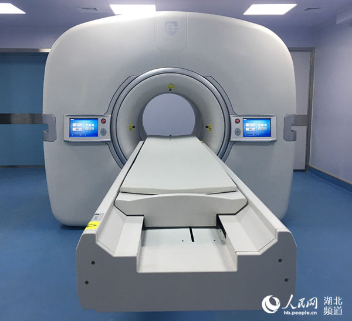

“数字PET”获得国家创新医疗器械特别审批
人民网武汉1月29日电 记者近日获悉，武汉国家光电研究中心研究员、华中科技大学生命学院教授谢庆国发明的高端医疗仪器“数字PET”已获得国家创新医疗器械特别审批。“特别审批”意味着国家为“数字PET”进入临床应用开辟了一条“绿色通道”，我国PET市场被进口高端医疗仪器垄断的局面有望被全面打破。
2018年1月10日，国家食品药品监督管理总局医疗器械技术评审中心发布了创新医疗器械特别审批申请审查结果公示（2018年第1号）文件，“全数字正电子发射及X射线断层成像扫描系统”等四个产品通过审批，并于1月23日完成公示。
PET是“精准医学”重要设备，与CT、核磁并称为医学影像“三大件”，是肿瘤等重大疾病早期诊断的利器。但受制于超高速闪烁脉冲信号精确数字化的瓶颈，PET长期存在“使用难、应用窄”的短板；此外，PET研发技术门槛极高，长期为西方跨国巨头垄断，价格居高不下，成为我国医疗健康领域的一块“心病”。
“数字PET”技术以“全数字”和“精确采样”为本质特点，在取消模拟电路的同时获取精确源信号数据，因此有“性能优异、使用便利、制造快捷”等革命性优势。在国家自然基金委员会、科技部、教育部等国家部委的支持下，谢庆国教授带领团队历经十八年艰苦奋斗，发展出了全套完整的数字PET自主知识产权体系，临床全数字PET正是在国家重大科学仪器设备开发专项《超高分辨率PET的开发和应用》支持下产生的重大成果。
武汉国家光电研究中心研究员、华中科技大学生命学院教授谢庆国是“数字PET”发明人，他认为：“数字PET作为从源头的科学原理创新到性能全球领先的临床设备开发，可以说是充分符合创新医疗器械的所有要求。能被纳入创新医疗器械特别审批程序，相当于走上了一条“绿色通道”，政府部门从顶层设计到审评审批环节都将提速提质，将大大缩短数字PET投入临床造福民众的时间！”
由国家食品药品监管总局于2014年发布的《创新医疗器械特别审批程序（试行）》规定，对具有我国发明专利的，拥有自主知识产权，技术上属国内首创、达到国际领先水平，并且具有显著的临床应用价值的创新产品，纳入特别审批通道，优先进行技术审评和行政审批。按照该程序，对于创新型的医疗器械注册，从申报到注册完毕，有可能仅需60个工作日，比以往的审批时间大大缩减。自创新审批程序实施以来，企业申报踊跃，但因门槛高、要求严，从2014年至今，仅159个产品获批。
临床全数字PET/CT的产业化负责人张博表示，“就目前来看，我们在广州两个医院的临床试验取得了良好效果，这次能够踏上国家的特别审批“绿色通道”，意味着临床全数字PET完成认证投入市场的时间将可以缩短至少半年以上的时间！”
2015年，湖北省鄂州市政府引入数字PET技术，成立产业化实体—湖北锐世数字医学影像科技有限公司，开发出了世界第一台大型临床全数字PET/CT。其核心指标在国际同类产品中全面领先， 2.1毫米空间分辨率远高于西门子、飞利浦、通用医疗等国际巨头的同类设备，在立体像素上实现了8倍的性能提升。目前该仪器正在中山大学附属第一医院和肿瘤医院进行临床取证工作，即将完成CFDA认证，正式量产并投入市场。
张博介绍，PET投入应用四十多年并无突破性技术进展，一直未解决数字化难题，数字PET进入临床将是一件了不起的由中国人发起的创新行动，其意义如同数码相机取代胶片相机、智能手机取代普通手机一样，将对传统PET市场产生颠覆性影响。
根据全国癌症登记中心最新公开数据，2015年我国大概有新发癌症病倒数429万，相当于平均每天新发1.2万，281万死亡病例，相当于每天7500死于癌症，我国癌症新发病例占全世界近22%，27%死亡病倒在中国，中国是名副其实的癌症大国；中国癌症患者的五年生存率仅为30.9%，不及美国的一半癌症成为导致我国公民疾病死亡的第一大因素。数字PET凭借其出色的成像性能，极大增强了对癌症进行早期检测的能力，这就意味着发现癌症的时间可以大幅提前。对患者而言，这不仅是几万与几十万治疗费用的区别，更可能就是生与死的区别。
“高性能医疗器械”是《中国制造2025》计划十大重点支持的领域，源头创新的“数字PET”是中国制造2025标志性产品，其进入临床取证阶段是我国综合国力在高端医疗仪器领域取得突破的重大体现，意味着当前的癌症大国被进口高端医疗仪器垄断的局面或将被全面打破。（田豆豆 吴欢莉）